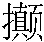
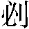

第十六回 杨志押送金银担 吴用智取生辰纲
《鹧鸪天》：
罡星起义在山东，杀曜纵横水浒中。可是七星成聚会，却于四海显英雄。 人似虎，马如龙，黄泥冈上巧施功。满驮金贝归山寨，懊恨中书老相公。
话说当时公孙胜正在阁儿里对晁盖说：”这北京生辰纲是不义之财，取之何碍。”只见一个人从外面抢将入来，揪住公孙胜道：”你好大胆！却才商议的事，我都知了也。”那人却是智多星吴学究。晁盖笑道：”先生休慌，且请相见。”两个叙礼罢，吴用道：”江湖上久闻人说入云龙公孙胜一清大名，不期今日此处得会。”晁盖道：”这位秀士先生，便是智多星吴学究。”公孙胜道：”吾闻江湖上多人曾说加亮先生大名，岂知缘法却在保正庄上得会贤契。只是保正疏财仗义，以此天下豪杰都投门下。”晁盖道：”再有几位相识在里面，一发请进后堂深处见。”三个人入到里面，就与刘唐、三阮都相见了。
众人道：”今日此一会，应非偶然，须请保正哥哥正面而坐。”晁盖道：”量小子是个穷主人，又无甚罕物相留好客，怎敢占上。”吴用道：”保正哥哥，依着小生且请坐了。”晁盖只得坐了第一位，吴用坐了第二位，公孙胜坐了第三位，刘唐坐了第四位，阮小二坐了第五位，阮小五坐第六位，阮小七坐第七位，却才聚义饮酒。重整杯盘，再备酒肴，众人饮酌。
吴用道：”保正梦见北斗七星坠在屋脊上，今日我等七人聚义举事，岂不应天垂象。此一套富贵，唾手而取。我等七人和会，并无一人晓得。想公孙胜先生江湖上仗义疏财之士，所以得知这件事，来投保正。所说央刘兄去探听路程从那里来，今日天晚，来早便请登程。”公孙胜道：”这一事不须去了，贫道已打听知他来的路数了，只是黄泥冈大路上来。”晁盖道：”黄泥冈东十里路，地名安乐村，有一个闲汉，叫做白日鼠白胜，也曾来投奔我，我曾赍助他盘缠。”吴用道：”北斗上白光，莫不是应在这人？自有用他处。”刘唐道：”此处黄泥冈较远，何处可以容身？”吴用道：”只这个白胜家，便是我们安身处，亦还要用了白胜。”晁盖道：”吴先生，我等还是软取，却是硬取？”吴用笑道：”我已安排定了圈套，只看他来的光景，力则力取，智则智取。我有一条计策，不知中你们意否？如此如此。”晁盖听了大喜，

着脚道：”好妙计！不枉了称你做智多星，果然赛过诸葛亮。好计策！”吴用道：”休得再提。常言道：隔墙须有耳，窗外岂无人。只可你知我知。”晁盖便道：”阮家三兄且请回归，至期来小庄聚会。吴先生依旧自去教学。公孙先生并刘唐，只在敝庄权住。”当日饮酒至晚，各自去客房里歇息。次日五更起来，安排早饭吃了。晁盖取出三十两花银送与阮家三兄弟道：”权表薄意，切勿推却。”三阮那里肯受。吴用道：”朋友之意，不可相阻。”三阮方才受了银两。一齐送出庄外来。吴用附耳低言道：”这般这般，至期不可有误。”阮家三弟兄相别了，自回石碣村去。晁盖留住吴学究与公孙胜、刘唐在庄上，每日议事。
话休絮繁。却说北京大名府梁中书，收买了十万贯庆贺生辰礼物完备，选日差人起程。当下一日在后堂坐下，只见蔡夫人问道：”相公，生辰纲几时起程？”梁中书道：”礼物都已完备，明后日便用起身。只是一件事在此踌躇未决。”蔡夫人道：”有甚事踌躇未决？”梁中书道：”上年费了十万贯收买金珠宝贝，送上东京去，只因用人不着，半路被贼人劫将去了，至今无获。今年帐前眼见得又没个了事1的人送去，在此踌躇未决。”蔡夫人指着阶下道：”你常说这个人十分了得，何不着他委纸领状送去走一遭，不致失误。”梁中书看阶下那人时，却是青面兽杨志。梁中书大喜，随即唤杨志上厅说道：”我正忘了你。你若与我送得生辰纲去，我自有抬举你处。”杨志叉手向前禀道：”恩相差遣，不敢不依。只不知怎地打点？几时起身？”梁中书道：”着落大名府差十辆太平车子2，帐前拨十个厢禁军监押着车，每辆上各插一把黄旗，上写着’献贺太师生辰纲’，每辆车子再使个军健跟着。三日内便要起身去。”杨志道：”非是小人推托，其实去不得。乞钧旨别差英雄精细的人去。”梁中书道：”我有心要抬举你，这献生辰纲的札子内另修一封书在中间，太师跟前重重保你，受道敕命回来。如何倒生支调3，推辞不去？”杨志道：”恩相在上：小人也曾听得上年已被贼人劫去了，至今未获。今岁途中盗贼又多，甚是不好。此去东京，又无水路，都是旱路，经过的是紫金山、二龙山、桃花山、伞盖山、黄泥冈、白沙坞、野云渡、赤松林，这几处都是强人出没的去处。更兼单身客人，亦不敢独自经过。他知道是金银宝物，如何不来抢劫？枉结果了性命。以此去不得。”梁中书道：”恁地时，多着军校防护送去便了。”杨志道：”恩相便差五百人去，也不济事。这厮们一声听得强人来时，都是先走了的。”梁中书道：”你这般地说时，生辰纲不要送去了？”杨志又禀道：”若依小人一件事，便敢送去。”梁中书道：”我既委在你身上，如何不依你说。”杨志道：”若依小人说时，并不要车子，把礼物都装做十馀条担子，只做客人的打扮行货，也点十个壮健的厢禁军，却装做脚夫挑着。只消一个人和小人去，却打扮做客人，悄悄连夜送上东京交付。恁地时方好。”梁中书道：”你甚说的是。我写书呈，重重保你，受道诰命回来。”杨志道：”深谢恩相抬举。”
当日便叫杨志一面打拴担脚，一面选拣军人。次日，叫杨志来厅前伺候，梁中书出厅来问道：”杨志，你几时起身？”杨志禀道：”告复恩相，只在明早准行，就委领状。”梁中书道：”夫人也有一担礼物，另送与府中宝眷，也要你领。怕你不知头路，特地再教奶公谢都管并两个虞候，和你一同去。”杨志告道：”恩相，杨志去不得了。”梁中书道：”礼物多已拴缚完备，如何又去不得？”杨志禀道：”此十担礼物都在小人身上，和他众人都由杨志，要早行便早行，要晚行便晚行，要住便住，要歇便歇，亦依杨志提调。如今又叫老都管并虞候和小人去，他是夫人行的人，又是太师府门下奶公，倘或路上与小人鳖拗起来，杨志如何敢和他争执得？若误了大事时，杨志那其间如何分说？”梁中书道：”这个也容易，我叫他三个都听你提调便了。”杨志答道：”若是如此禀过，小人情愿便委领状。倘有疏失，甘当重罪。”梁中书大喜道：”我也不枉了抬举你，真个有见识。”随即唤老谢都管并两个虞候出来，当厅分付道：”杨志提辖情愿委了一纸领状，监押生辰纲十一担金珠宝贝赴京，太师府交割，这干系都在他身上。你三人和他做伴去，一路上早起晚行住歇，都要听他言语，不可和他鳖拗。夫人处分付的勾当，你三人自理会。小心在意，早去早回，休教有失。”老都管一一都应了。当日杨志领了。
次日早起五更，在府里把担仗都摆在厅前，老都管和两个虞候又将一小担财帛，共十一担，拣了十一个壮健的厢禁军，都做脚夫打扮。杨志戴上凉笠儿，穿着青纱衫子，系了缠带行履麻鞋，跨口腰刀，提条朴刀。老都管也打扮做个客人模样，两个虞候假装做跟的伴当。各人都拿了条朴刀，又带几根藤条。梁中书付与了札付4书呈。一行人都吃得饱了，在厅上拜辞了梁中书。看那军人担仗起程，杨志和谢都管、两个虞候监押着，一行共是十五人，离了梁府，出得北京城门，取大路投东京进发。五里单牌，十里双牌。此时正是五月半天气，虽是晴明得好，只是酷热难行。昔日吴七郡王有八句诗道：
玉屏四下朱阑绕，簇簇游鱼戏萍藻。
簟铺八尺白虾须，头枕一枚红玛瑙。
六龙惧热不敢行，海水煎沸蓬莱岛。
公子犹嫌扇力微，行人正在红尘道。
这八句诗单题着炎天暑月，那公子王孙在凉亭上水阁中，浸着浮瓜沉李，调冰雪藕避暑，尚兀自嫌热。怎知客人为些微名薄利，又无枷锁拘缚，三伏内只得在那途路中行。今日杨志这一行人，要取六月十五日生辰，只得在路途上行。自离了这北京五七日，端的只是起五更趁早凉便行，日中热时便歇。五七日后，人家渐少，行客又稀，一站站都是山路。杨志却要辰牌起身，申时便歇。那十一个厢禁军，担子又重，无有一个稍轻，天气热了，行不得，见着林子便要去歇息。杨志赶着催促要行，如若停住，轻则痛骂，重则藤条便打，逼赶要行。两个虞候虽只背些包裹行李，也气喘了行不上。杨志也嗔道：”你两个好不晓事！这干系须是俺的！你们不替洒家打这夫子，却在背后也慢慢地挨，这路上不是耍处。”那虞候道：”不是我两个要慢走，其实热了行不动，因此落后。前日只是趁早凉走，如今怎地正热里要行？正是好歹不均匀。”杨志道：”你这般说话，却似放屁。前日行的须是好地面，如今正是尴尬去处，若不日里赶过去，谁敢五更半夜走？”两个虞候口里不道，肚中寻思：”这厮不直得便骂人。”
杨志提了朴刀，拿着藤条，自去赶那担子。两个虞候坐在柳阴树下等得老都管来。两个虞候告诉道：”杨家那厮，强杀只是我相公门下一个提辖，直这般做大5！”老都管道：”须是我相公当面分付，道休要和他鳖拗，因此我不做声。这两日也看他不得，权且奈他。”两个虞候道：”相公也只是人情话儿，都管自做个主便了。”老都管又道：”且奈他一奈。”当日行到申牌时分，寻得一个客店里歇了。那十个厢禁军雨汗通流，都叹气吹嘘，对老都管说道：”我们不幸做了军健，情知道被差出来。这般火似热的天气，又挑着重担，这两日又不拣早凉行，动不动老大藤条打来，都是一般父母皮肉，我们直恁地苦！”老都管道：”你们不要怨怅，巴到东京时，我自赏你。”众军汉道：”若是似都管看待我们时，并不敢怨怅。”又过了一夜。次日天色未明，众人起来，趁早凉起身去。杨志跳起来喝道：”那里去！且睡了，却理会。”众军汉道：”趁早不走，日里热时走不得，却打我们。”杨志大骂道：”你们省得甚么！”拿了藤条要打。众军忍气吞声，只得睡了。当日直到辰牌时分，慢慢地打火，吃了饭走。一路上赶打着，不许投凉处歇。那十一个厢禁军口里喃喃讷讷地怨怅，两个虞候在老都管面前絮絮聒聒地搬口。老都管听了，也不着意，心内自恼他。
话休絮繁。似此行了十四五日，那十四个人，没一个不怨怅杨志。当日客店里，辰牌时分，慢慢地打火，吃了早饭行。正是六月初四日时节，天气未及晌午，一轮红日当天，没半点云彩，其日十分大热。古人有八句诗道：
祝融南来鞭火龙，火旗焰焰烧天红。
日轮当午凝不去，万国如在红炉中。
五岳翠干云彩灭，阳侯海底愁波竭。
何当一夕金风起，为我扫除天下热。
当日行的路，都是山僻崎岖小径，南山北岭。却监着那十一个军汉，约行了二十馀里路程。那军人们思量要去柳阴树下歇凉，被杨志拿着藤条打将来，喝道：”快走！教你早歇。”众军人看那天时，四下里无半点云彩，其时那热不可当。但见：
热气蒸人，嚣尘扑面。万里乾坤如甑，一轮火伞当天。四野无云，风穾穾波翻海沸；千山灼焰，

剥剥石烈灰飞。空中鸟雀命将休，倒入树林深处；水底鱼龙鳞角脱，直钻入泥土窖里。直教石虎喘无休，便是铁人须汗落。当时杨志催促一行人在山中僻路里行，看看日色当午，那石头上热了，脚疼走不得。众军汉道：”这般天气热，兀的不晒杀人。”杨志喝着军汉道：”快走！赶过前面冈子去，却再理会。”正行之间，前面迎着那土冈子。众人看这冈子时，但见：
顶上万株绿树，根头一派黄沙。嵯峨浑似老龙形，险峻但闻风雨响。山边茅草，乱丝丝攒遍地刀枪；满地石头，碜可可睡两行虎豹。休道西川蜀道险，须知此是太行山。
当时一行十五人奔上冈子来，歇下担仗，那十四人都去松阴树下睡倒了。杨志说道：”苦也！这里是甚么去处，你们却在这里歇凉！起来，快走！”众军汉道：”你便剁做我七八段，其实去不得了。”杨志拿起藤条，劈头劈脑打去。打得这个起来，那个睡倒，杨志无可奈何。只见两个虞候和老都管气喘急急，也巴到冈子上松树下坐了喘气。看这杨志打那军健，老都管见了，说道：”提辖，端的热了走不得，休见他罪过。”杨志道：”都管，你不知，这里正是强人出没的去处，地名叫做黄泥冈。闲常太平时节，白日里兀自出来劫人，休道是这般光景，谁敢在这里停脚！”两个虞候听杨志说了，便道：”我见你说好几遍了，只管把这话来惊吓人。”老都管道：”权且教他们众人歇一歇，略过日中行如何？”杨志道：”你也没分晓了，如何使得！这里下冈子去，兀自有七八里没人家，甚么去处，敢在此歇凉！”老都管道：”我自坐一坐了走，你自去赶他众人先走。”杨志拿着藤条喝道：”一个不走的，吃俺二十棍。”众军汉一齐叫将起来。数内一个分说道：”提辖，我们挑着百十斤担子，须不比你空手走的。你端的不把人当人！便是留守相公自来监押时，也容我们说一句。你好不知疼痒，只顾逞办！”杨志骂道：”这畜生不呕死俺，只是打便了。”拿起藤条，劈脸便打去。老都管喝道：”杨提辖且住，你听我说。我在东京太师府里做奶公时，门下官军见了无千无万，都向着我喏喏连声。不是我口浅，量你是个遭死的军人，相公可怜，抬举你做个提辖，比得草芥子大小的官职，直得恁地逞能。休说我是相公家都管，便是村庄一个老的，也合依我劝一劝，只顾把他们打，是何看待！”杨志道：”都管，你须是城市里人，生长在相府里，那里知道途路上千难万难。”老都管道：”四川、两广也曾去来，不曾见你这般卖弄。”杨志道：”如今须不比太平时节。”都管道：”你说这话该剜口割舌，今日天下怎地不太平？”
杨志却待再要回言，只见对面松林里影着一个人在那里舒头探脑价望。杨志道：”俺说甚么，兀的不是歹人来了！”撇下藤条，拿了朴刀，赶入松林里来，喝一声道：”你这厮好大胆，怎敢看俺的行货！”只见松林里一字儿摆着七辆江州车儿6，七个人脱得赤条条的在那里乘凉。一个鬓边老大一搭朱砂记，拿着一条朴刀，望杨志跟前来。七个人齐叫一声：”呵也！”都跳起来。杨志喝道：”你等是甚么人？”那七人道：”你是甚么人？”杨志又问道：”你等莫不是歹人？”那七人道：”你颠倒问，我等是小本经纪，那里有钱与你。”杨志道：”你等小本经纪人，偏俺有大本钱。”那七人问道：”你端的是甚么人？”杨志道：”你等且说那里来的人？”那七人道：”我等弟兄七人，是濠州人，贩枣子上东京去，路途打从这里经过。听得多人说，这里黄泥冈上如常有贼打劫客商。我等一面走，一头自说道：’我七个只有些枣子，别无甚财赋。’只顾过冈子来。上得冈子，当不过这热，权且在这林子里歇一歇，待晚凉了行。只听得有人上冈子来，我们只怕是歹人，因此使这个兄弟出来看一看。”杨志道：”原来如此，也是一般的客人。却才见你们窥望，惟恐是歹人，因此赶来看一看。”那七个人道：”客官请几个枣子了去。”杨志道：”不必。”提了朴刀，再回担边来。
老都管道：”既是有贼，我们去休。”杨志说道：”俺只道是歹人，原来是几个贩枣子的客人。”老都管道：”似你方才说时，他们都是没命的。”杨志道：”不必相闹，俺只要没事便好。你们且歇了，等凉些走。”众军汉都笑了。杨志也把朴刀插在地上，自去一边树下坐了歇凉。没半碗饭时，只见远远地一个汉子，挑着一副担桶，唱上冈子来。唱道：
“赤日炎炎似火烧，野田禾稻半枯焦。
农夫心内如汤煮，楼上王孙把扇摇。”
那汉子口里唱着，走上冈子来，松林里头歇下担桶，坐地乘凉。众军看见了，便问那汉子道：”你桶里是甚么东西？”那汉子应道：”是白酒。”众军道：”挑往那里去？”那汉子道：”挑去村里卖。”众军道：”多少钱一桶？”那汉子道：”五贯足钱。”众军商量道：”我们又热又渴，何不买些吃，也解暑气。”正在那里凑钱，杨志见了，喝道：”你们又做甚么？”众军道：”买碗酒吃。”杨志调过朴刀杆便打，骂道：”你们不得洒家言语，胡乱便要买酒吃，好大胆！”众军道：”没事又来鸟乱。我们自凑钱买酒吃，干你甚事，也来打人。”杨志道：”你这村鸟理会的甚么！到来只顾吃嘴，全不晓得路途上的勾当艰难。多少好汉，被蒙汗药麻翻了。”那挑酒的汉子看着杨志冷笑道：”你这客官好不晓事，早是我不卖与你吃，却说出这般没气力的话来。”
正在松树边闹动争说，只见对面松林里那伙贩枣子的客人，都提着朴刀走出来问道：”你们做甚么闹？”那挑酒的汉子道：”我自挑这酒过冈子村里卖，热了在此歇凉。他众人要问我买些吃，我又不曾卖与他。这个客官道我酒里有甚么蒙汗药。你道好笑么？说出这般话来！”那七个客人说道：”我只道有歹人出来，原来是如此。说一声也不打紧，我们倒着买一碗吃。既是他们疑心，且卖一桶与我们吃。”那挑酒的道：”不卖，不卖！”这七个客人道：”你这鸟汉子也不晓事，我们须不曾说你。你左右将到村里去卖，一般还你钱，便卖些与我们，打甚么不紧。看你不道得7舍施了茶汤，便又救了我们热渴。”那挑酒的汉子便道：”卖一桶与你不争，只是被他们说的不好。又没碗瓢舀吃。”那七人道：”你这汉子忒认真，便说了一声打甚么不紧。我们自有椰瓢在这里。”只见两个客人去车子前取出两个椰瓢来，一个捧出一大捧枣子来。七个人立在桶边，开了桶盖，轮替换着舀那酒吃，把枣子过口，无一时，一桶酒都吃尽了。七个客人道：”正不曾问得你多少价钱？”那汉道：”我一了8不说价，五贯足钱一桶，十贯一担。”七个客人道：”五贯便依你五贯，只饶我们一瓢吃。”那汉道：”饶不的，做定的价钱。”一个客人把钱还他，一个客人便去揭开桶盖，兜了一瓢，拿上便吃。那汉去夺时，这客人手拿半瓢酒，望松林里便走。那汉赶将去，只见这边一个客人从松林里走将出来，手里拿一个瓢，便来桶里舀了一瓢酒。那汉看见，抢来劈手夺住，望桶里一倾，便盖了桶盖，将瓢望地下一丢，口里说道：”你这客人好不君子相！戴头识脸的9，也这般啰唣。”
那对过众军汉见了，心内痒起来，都待要吃。数中一个看着老都管道：”老爷爷，与我们说一声。那卖枣子的客人买他一桶吃了，我们胡乱也买他这桶吃，润一润喉也好。其实热渴了，没奈何，这里冈子上又没讨水吃处。老爷方便！”老都管见众军所说，自心里也要吃得些，竟来对杨志说：”那贩枣子客人已买了他一桶酒吃，只有这一桶，胡乱教他们买了避暑气。冈子上端的没处讨水吃。”杨志寻思道：”俺在远远处望，这厮们都买他的酒吃了，那桶里当面也见吃了半瓢，想是好的。打了他们半日，胡乱容他买碗吃罢。”杨志道：”既然老都管说了，教这厮们买吃了便起身。”众军健听了这话，凑了五贯足钱来买酒吃。那卖酒的汉子道：”不卖了，不卖了！”便道：”这酒里有蒙汗药在里头。”众军陪着笑说道：”大哥，直得便还言语。”那汉道：”不卖了，休缠！”这贩枣子的客人劝道：”你这个鸟汉子，他也说得差了，你也忒认真，连累我们也吃你说了几声。须不关他众人之事，胡乱卖与他众人吃些。”那汉道：”没事讨别人疑心做甚么。”这贩枣子客人把那卖酒的汉子推开一边，只顾将这桶酒提与众军去吃。那军汉开了桶盖，无甚舀吃，陪个小心，问客人借这椰瓢用一用。众客人道：”就送这几个枣子与你们过酒。”众军谢道：”甚么道理。”客人道：”休要相谢，都是一般客人，何争在这百十个枣子上。”众军谢了，先兜两瓢，叫老都管吃一瓢，杨提辖吃一瓢。杨志那里肯吃。老都管自先吃了一瓢，两个虞候各吃一瓢。众军汉一发上，那桶酒登时吃尽了。杨志见众人吃了无事，自本不吃，一者天气甚热，二乃口渴难熬，拿起来，只吃了一半，枣子分几个吃了。那卖酒的汉子说道：”这桶酒吃那客人饶两瓢吃了，少了你些酒，我今饶了你众人半贯钱罢。”众军汉把钱还他。那汉子收了钱，挑了空桶，依然唱着山歌，自下冈子去了。
只见那七个贩枣子的客人，立在松树旁边，指着这一十五人说道：”倒也，倒也！”只见这十五个人，头重脚轻，一个个面面厮觑，都软倒了。那七个客人从松树林里推出这七辆江州车儿，把车子上枣子都丢在地上，将这十一担金珠宝贝，却装在车子内，叫声：”聒噪！”一直望黄泥冈下推了去。杨志口里只是叫苦，软了身体，扎挣不起。十五人眼睁睁地看着那七个人都把这金宝装了去，只是起不来，挣不动，说不的。
我且问你：这七人端的是谁？不是别人，原来正是晁盖、吴用、公孙胜、刘唐、三阮这七个。却才那个挑酒的汉子，便是白日鼠白胜。却怎地用药？原来挑上冈子时，两桶都是好酒。七个人先吃了一桶，刘唐揭起桶盖，又兜了半瓢吃，故意要他们看着，只是教人死心塌地。次后，吴用去松林里取出药来，抖在瓢里，只做赶来饶他酒吃，把瓢去兜时，药已搅在酒里，假意兜半瓢吃，那白胜劈手夺来，倾在桶里。这个便是计策。那计较都是吴用主张。这个唤做”智取生辰纲”。
原来杨志吃的酒少，便醒得快，爬将起来，兀自捉脚不住。看那十四个人时，口角流涎，都动不得。正应俗语道：”饶你奸似鬼，吃了洗脚水。”杨志愤闷道：”不争你把了生辰纲去，教俺如何回去见得梁中书！这纸领状须缴不得！”就扯破了。”如今闪得俺有家难奔，有国难投，待走那里去？不如就这冈子上寻个死处！”撩衣破步，望黄泥冈下便跳。正是：虽然未得身荣贵，到此先须祸及身。正是：断送落花三月雨，摧残杨柳九秋霜。毕竟杨志在黄泥冈上寻死，性命如何，且听下回分解。
《第十六回 杨志押送金银担 吴用智取生辰纲》读后感
接上回。七星聚义已毕，各人自去准备。
梁中书选了杨志去押运生辰纲，但又要杨志带上太师傅奶公老都管一起上路。杨志已经预感到在路上可能镇不住场子，提前向梁中书说明厉害关系，如果要自己带队，就必须让他们都听自己的。梁中书也答应了，但只是口头上的，为后面的失陷埋下了隐患。
时值河北农历五月半，太阳辐射强，天气闷热，所走路段又人烟稀少。杨志为了避免被劫，一直到早上9点才开始上路，下午3点就停止，刚好在一天中最热的时段赶路，所有人都叫苦不迭，怨声载道。
到了黄泥冈，遇到了七个贩枣子的客商，杨志上前问询，没发现什么破绽。这时，好巧不巧，又来了一个卖酒的汉子。众军士都热不可当，想要买酒吃，杨志不准，大家都气得牙痒痒。卖酒的也阴阳杨志不讲道理。这时，那七个枣商出来买了一桶酒，很快就着枣子就喝完了，更是让杨志这边的人流口水。
到了给钱的环节，有个客商要求多给一瓢酒，卖酒的不许，于是他强行舀了半瓢，卖酒的去追，此时另一个客商又拿了一个瓢去舀，卖酒的回身将瓢按回酒中（蒙汗药就在此时放入了酒中），并骂这人衣装革履的也干这种事。
到这时，众军士被他们勾的望眼欲穿，实在受不了了，再次向老都管求救。老都管自己也想喝，就再来求杨志。杨志见这些人喝了一桶都没事，另一桶酒被舀了半瓢喝了也没事，最终还是放松了警惕。
结果，喝完之后杨志这边所有人都东倒西歪，脚趴手软，口角流涎，动弹不得。正是：“饶你奸似鬼，吃了洗脚水。” 只能眼睁睁看着生辰纲被运走。
这七个客商正是晁盖、吴用等七人，他们还算好的，没有杀人灭口。杨志喝得少，很快就恢复正常，想到自己无颜见梁中书，只得将手中领状直接撕了，想要跳崖一死了之。
通过本回，我们可以得知：
- 不怕神一样的对手，就怕猪一样的队友，如果没有奶公老都管在那里倚仗资格，杨志就不会有那么大压力，管好那些军士还是可以的。那么杨志能向梁中书要求更大的权力，甚至先斩后奏吗？思考一下，似乎也是不行的。在前面几回，梁中书是蔡太师的女婿，自己本身都是靠着老婆才上位的，手下的军官都不怎么服他，要提拔杨志作为自己的嫡系竟然还要靠比武才能决定。老都管作为太师府的奶公，梁中书自然不敢要求得太多。
- 杨志自己不坚定，哪怕老都管开口，你作为带队的，责任都在你身上，你不答应，他们也就算了，骂你埋怨你又如何？打他们又打不过你。结果把事情搞砸了，所有责任都得自己扛。
- 失败了就想死，把领状撕了，实在不明智，连自己最后的辩白机会也放弃了，只能任人陷害了。